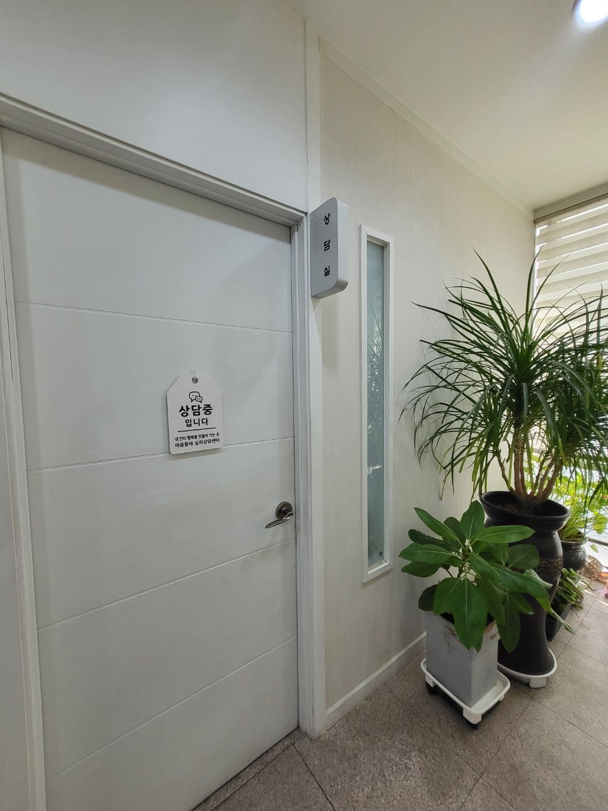
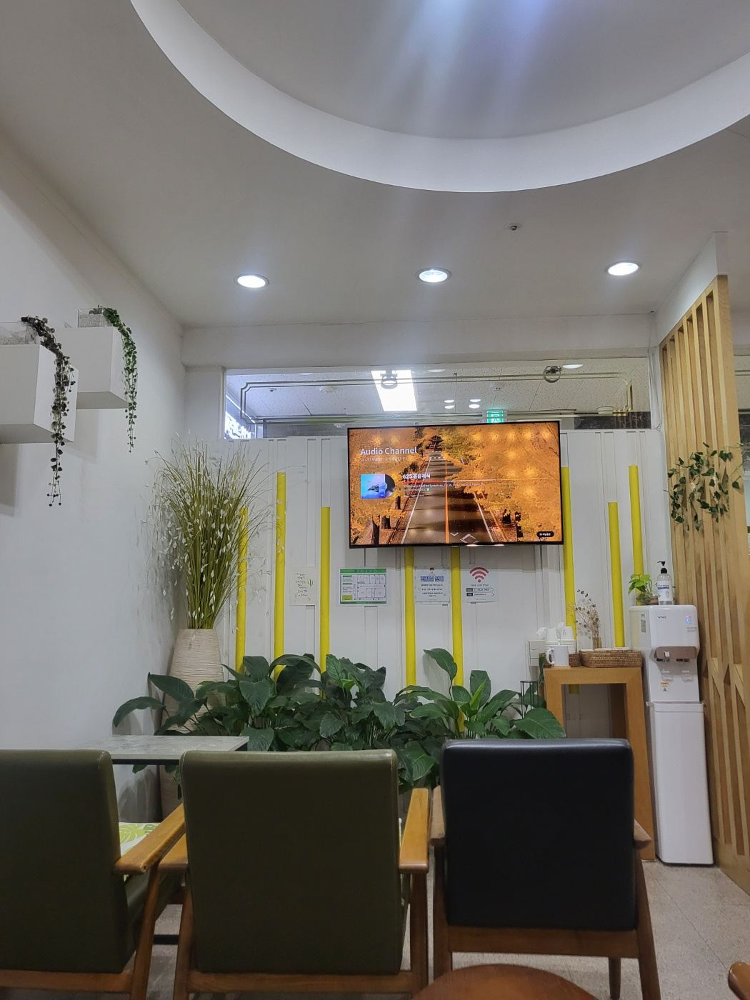

인천 구월동 · 개인상담(성인)
혼자 감당하기 어려운 마음,
전문가와 함께 천천히 살펴봅니다
가라앉는 기분과 불안, 자꾸 같은 자리에서 어긋나는 관계, 일터에서 쌓인 지침, 아직 마음에 남아 있는 지난 상처까지. 말로 꺼내기 어려운 이야기도 여기서는 천천히 시작해도 괜찮습니다.

이런 마음일 때
이런 마음일 때 찾아오세요
꼭 큰 일이 있어야 상담을 받는 것은 아닙니다. 지금의 마음을 누군가와 함께 정리해 보고 싶을 때가 시작하기 좋은 때입니다.
우울·무기력
의욕이 없고 아무것도 하고 싶지 않은 날이 이어집니다. 마음을 다잡아 보려 해도 잘 되지 않습니다.
불안·걱정
이유 없이 불안하고 걱정이 멈추지 않습니다. 그 때문에 일상까지 힘들어졌습니다.
지난 상처·트라우마
잊고 싶은 기억이 자꾸 떠오릅니다. 지난 경험이 지금의 감정과 관계에까지 영향을 줍니다.
관계·애착
가까워질수록 불안하거나 멀어지게 됩니다. 관계에서 같은 어려움이 반복됩니다.
직장·진로 스트레스, 소진
일에 쫓겨 마음이 바닥난 느낌입니다. 이 길이 맞는지 방향을 잃은 것 같습니다.
자존감·자기이해
스스로를 자꾸 탓하게 됩니다. 내가 어떤 사람인지, 무엇을 원하는지 알고 싶습니다.
상실·애도
소중한 사람이나 관계를 잃은 뒤 시간이 멈춘 것 같습니다. 슬픔을 어디에 두어야 할지 모르겠습니다.
삶의 전환기
결혼·출산·이직·이별·은퇴처럼 삶이 크게 바뀌는 시기에 마음이 흔들립니다.
근거기반 접근
근거기반 접근을 바탕으로 합니다
마음동네에는 다음 접근을 훈련받은 상담사가 있습니다.
인지행동치료 (CBT)
생각과 감정, 행동의 연결을 이해하고, 도움이 되지 않는 생각과 행동의 패턴을 바꾸어 가는 접근입니다.
김명숙 센터장홍주학 부원장
변증법적 행동치료 (DBT)
감정 조절과 대인관계, 스트레스에 대처하는 힘을 기르는 접근입니다.
김명숙 센터장
정신역동·정신분석적 접근
반복되는 관계와 감정의 패턴, 무의식적 갈등을 이해해 가는 접근입니다.
김애숙 상담사
마음챙김 기반 접근
지금 이 순간의 감정과 생각을 알아차리고 받아들이는 연습입니다.
트라우마 기반 접근
EMDR, 브레인스포팅, SE 등 과거의 경험이 지금의 감정과 관계에 남긴 영향을 다루는 접근입니다.
EMDR·브레인스포팅: 김명숙 센터장
균형심리치료
개인의 심리적 특성과 어려움을 종합적으로 이해하는 접근입니다.
김명숙 센터장남상철 원장
중요한 것은 어떤 치료기법이 더 유명한지가 아니라, 나에게 지금 필요한 상담이 무엇인지 이해하고 그에 맞는 접근을 선택하는 것입니다.
그래서 첫 만남에서 지금의 어려움과 바라는 변화를 충분히 듣고, 나에게 맞는 접근을 상담사와 함께 정합니다.
진행 절차
상담은 이렇게 진행됩니다
- 예약 문의전화나 네이버 예약으로 편한 시간을 알려 주세요.
- 첫 만남 (초기면담)지금 어떤 점이 가장 힘든지, 상담을 통해 무엇이 달라지기를 바라는지 이야기 나눕니다.
- 필요할 때 심리평가마음의 상태를 더 정확히 이해할 필요가 있으면 임상심리전문가가 심리평가를 진행합니다.
- 상담 목표와 방향 함께 정하기무엇을 먼저 다룰지, 어떤 접근이 맞을지 상담사와 함께 정합니다.
- 정기 상담정해진 시간에 꾸준히 만나며 마음을 살피고 변화를 만들어 갑니다.
- 중간 점검과 마무리중간중간 처음 목표를 돌아보고 방향을 조정합니다. 충분히 정리되었을 때 함께 마무리합니다.
비용과 일정은 전화로 안내해 드립니다. 상담 예약 절차 자세히 보기

심리평가가 필요할 때
마음동네에는 한국임상심리학회 임상심리전문가 3명이 있어, 상담 중 필요할 때 심리평가를 함께 진행할 수 있습니다. 지금의 어려움이 어디에서 오는지 더 객관적으로 살펴보고 상담 방향을 정하는 데 도움이 됩니다.
상담진
개인상담을 맡는 상담진
학회·국가 자격을 갖춘 상담사가 성인 개인상담을 맡습니다.
김명숙 센터장
한국임상심리학회 임상심리전문가성인·부부·가족인지행동치료DBTEMDR·브레인스포팅
홍주학 부원장
한국임상심리학회 임상심리전문가 한국상담심리학회 상담심리사 1급청소년·성인인지행동치료
김애숙 상담사
청소년상담사 1급 (국가자격) 임상심리사 1급 (국가기술자격)성인정신분석적 접근
김유진 부원장
한국상담심리학회 상담심리사 2급청소년·성인영어 상담
정신건강 심리상담 바우처(전국민 마음투자 지원사업)로도 개인상담을 받으실 수 있습니다.
바우처 안내 보기자주 묻는 질문
상담 전에 많이 궁금해하시는 것
마음동네는 의료기관인가요?
아니요. 마음동네는 심리상담기관입니다. 진단이나 약물치료가 필요하다고 판단되면 정신건강의학과와 연계해 안내해 드립니다. 상담은 건강보험 진료가 아니므로 건강보험 진료 기록으로 청구되지 않습니다.
상담 내용은 비밀이 지켜지나요?
네. 상담에서 나눈 이야기는 상담자 윤리에 따라 비밀로 지켜집니다. 다만 본인이나 다른 사람의 생명·안전에 심각한 위험이 있을 때, 법에 따라 알려야 할 때처럼 예외가 있으며, 이런 경우에도 꼭 필요한 최소한의 정보만 다룹니다. 예외 상황은 첫 만남에서 미리 설명해 드립니다.
어떤 상담사를 만나게 되나요?
예약 문의 때 지금의 고민과 가능한 시간을 여쭙고, 그에 맞는 상담사를 안내해 드립니다. 만나고 싶은 상담사가 있으면 예약할 때 말씀해 주세요. 상담진 소개에서 상담사별 자격과 경력을 보실 수 있습니다.
처음 만나면 무슨 이야기를 하나요?
지금 가장 힘든 점, 언제부터 그랬는지, 상담을 통해 무엇이 달라지기를 바라는지를 편하게 이야기합니다. 준비해 오실 것은 없습니다. 말하기 어려운 부분은 천천히 꺼내셔도 괜찮습니다.
정신건강의학과 약을 먹고 있어도 상담을 받을 수 있나요?
네, 받으실 수 있습니다. 진료와 상담을 함께 받는 분도 많습니다. 복용 중인 약이 있으면 첫 만남 때 알려 주세요. 약의 조절은 담당 의사와 상의하시면 됩니다.
센터에 오기 어려우면 화상으로도 상담할 수 있나요?
네. 멀리 계시거나 해외에 거주하시는 분은 화상(원격) 상담을 이용하실 수 있습니다. 국내 지방·해외 상담 안내를 확인해 주세요.